Linux剑法（第一式）
为什么要习得此剑法？
当今世界，强者纵横，Linux被广泛使用，自掌门Linus Benedict Torvalds开宗立派之后，便将此剑法广布天下，如今也成为了晋升强者道路上的一门必修功法。Linux安全性高，内核稳定，具有完善的开发和调试工具，如今Linux也被广泛的使用在超级计算机、服务器、PC机、手机、嵌入式系统中，尤其是服务器开发，此剑法可谓上乘之选。而且我们未来学习其他功法，可能也需要懂得此套剑法。少侠，何不现在开始？
工欲善其事，必先利其器
在学习剑法之前，必然是选择一柄上好的武器，恰好，我这里有京中著名工匠所铸的长剑剑柄VMware，剑刃centOS7，还有一个密匙ZF3R0-FHED2-M80TY-8QYGC-NPKYF，一并赠与少侠，但。。。还需要少侠亲自组装一下。不用担心，我给少侠带来了安装说明书，如下：
1.取出VMware，安装在我们的电脑上，如果你直接安装成功可以去看第二步了，如果你没安装成功，可能是需要开启CPU虚拟化，开启虚拟化首先要根据你的电脑型号上网查找按哪个键进入BIOS，然后重启电脑，在重启的过程中狂按那个键，待进入BIOS界面后进入BIOS后，找到Configuration，选择Intel Virtual Technology（或AMD Virtual Technology）按回车，将光标移至Enabled，然后再回车，最后按F10保存并退出。
2.安装好VMware后，我们要将centOS7映像文件下载下来。
3.打开VMware，点击创建新的虚拟机，依次执行下列操作，选中典型、下一步、选中稍后安装操作系统、下一步、选中Linux、在版本的下拉菜单中选择Red Hat Enterprise Linux 7 64位、下一步、为你的剑取一个心仪的名字、选择放在一个喜欢的位置、下一步、下一步。
4.点击自定义硬件，选择处理器，这个时候我们要先确定自己电脑有几个CPU，总共有几个内核，我们点开任务管理器，点击性能，点击打开资源监视器，我们可以看到一个进程栏和一个任务栏，这证明我们的电脑有两个CPU，把右边拉到最下面可以看到一个CPU15，这证明我们总共有16个内核，也就是一个CPU有8个内核。所以我们可以选择分配给虚拟机2个CPU，每一个CPU分配4个内核，毕竟我们还要给母机本身留一点内核，这样我们就分配给虚拟机了2个CPU和总共8个内核。
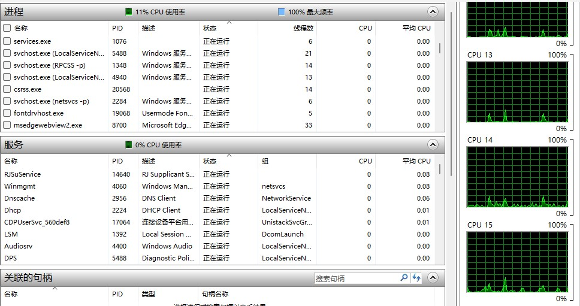
5.点击关闭、完成，右键新建好的虚拟机，点击设置，点击CD/DVD，选择使用ISO映像文件，选中下载好的centOS7映像文件，点击确定。
6.开启创建好的虚拟机，选中Install CentOS7，回车。
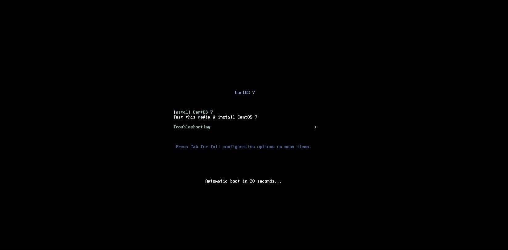
7.进入之后我们选择中文，点击软件选择，按照下图选择配置，点击完成。
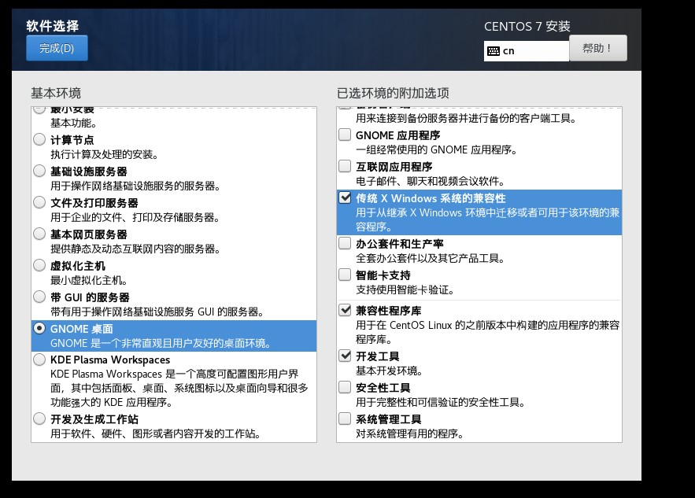
8.点击安装位置，选择我要配置分区，点击完成，我们最开始分配给了虚拟机一共20G的内存，现在我们要对这20G内存进行分区，点击加号，添加/boot分区1G，/swap分区2G，/分区17G。将三个分区的设备类型更改为标准分区，将/boot分区和/分区文件系统修改为ext4。
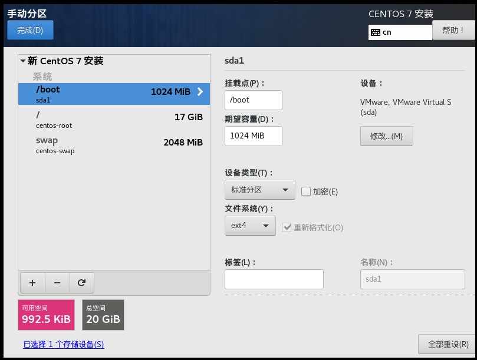
9.点开网络和主机名，开启网络连接，点击完成
10.之后我们开始安装，这个过程中我们可以设置Root密码，创建一个新的用户，因为Linux主张使用普通用户登录，当然你也可以在登录界面点击未登录，输入用户名Root和Root密码登录。安装结束后重启虚拟机，同意许可信息。
至此安装过程完毕，少侠得到了一柄好剑，江湖之旅即刻开始。
网络连接的三种模式
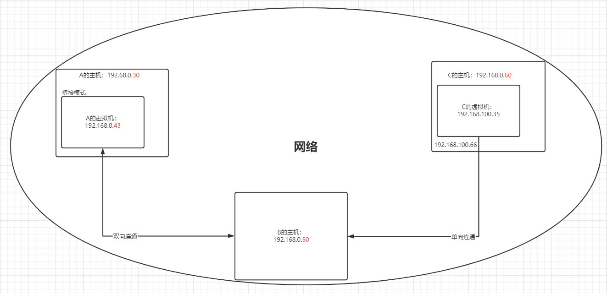
这一小段，我们认识一下网络的三种连接方式，分别是桥接模式，NAT模式，仅主机模式。首先我们根据图片可以知道，主机A、B、C都处在一个网段之中，所以他们之间可以相互通讯。
主机A的虚拟机采用的是桥接模式，所以虚拟机和主机处于同一网段，故此A的虚拟机可以和外界比如B的主机，相互连通。但是这样的连通方式存在一个问题，我们要知道，在一个网段中，只能存在255个IP。所以一旦有大量的主机创建了虚拟机，并且选用了桥接模式，就会造成IP冲突。
我们再看C，C主机的虚拟机是NAT模式，C主机上会生成一个对应的虚拟IP地址(如192.168.100.66 )，虚拟机的IP会和对应的虚拟IP地址相互通讯，C主机的虚拟机IP通过C主机的IP代理来与外部网络通讯，在内网和外网通讯的同时，外网与内网不在同一个网段中。但内网和外网的通讯是单向的，也就是虚拟机网络可以和外网沟通，但外网无法和虚拟机网络沟通。
最后，仅主机模式就是一个独立的系统，和外部不发生通讯。
虚拟机克隆
当我们已经安装了一个Linux系统了，但因为种种原因，我们还需要更多的系统，我们就可以使用虚拟机克隆，我们可以直接使用VMware的克隆操作。注意，在克隆的时候要先关闭Linux系统。
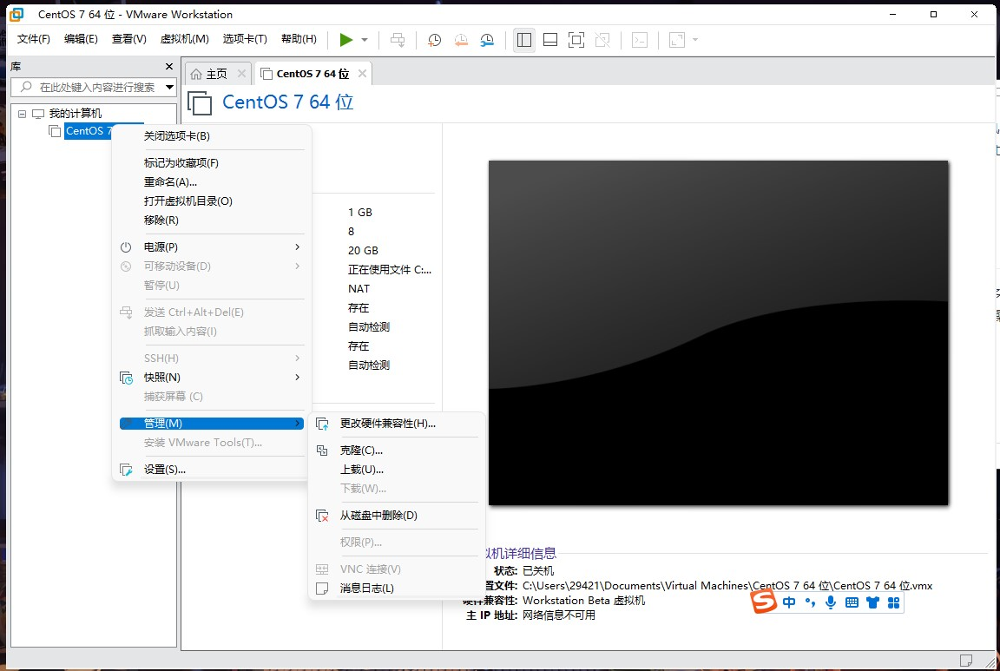
我们右键安装好的Linux系统，找到管理、克隆，之后下一步即可。当然这里面还有一个要注意的地方那就是链接克隆和完整克隆。
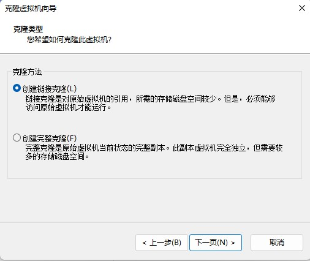
链接克隆的意思就好比创建一个引用，我们点击开启连接克隆后的系统和原系统是一样的，只不过我们给原系统起了一个别名。完整克隆的意思是我们真真正正的克隆一个独立的系统和原系统没有瓜葛。
虚拟机快照
当我们在虚拟机中进行操作的时候，可能会有一些危险操作可能会导致系统崩溃，这个时候我们可以使用虚拟机快照，如果系统崩溃可以快速的将Linux系统恢复到我们拍摄快照的时间点。我们右键点击系统，找到快照，点击拍摄快照，这样我们就建立好了一个快照。当我们未来需要恢复的时候可以选择快照管理器，选择回溯到某一个快照的时间节点。
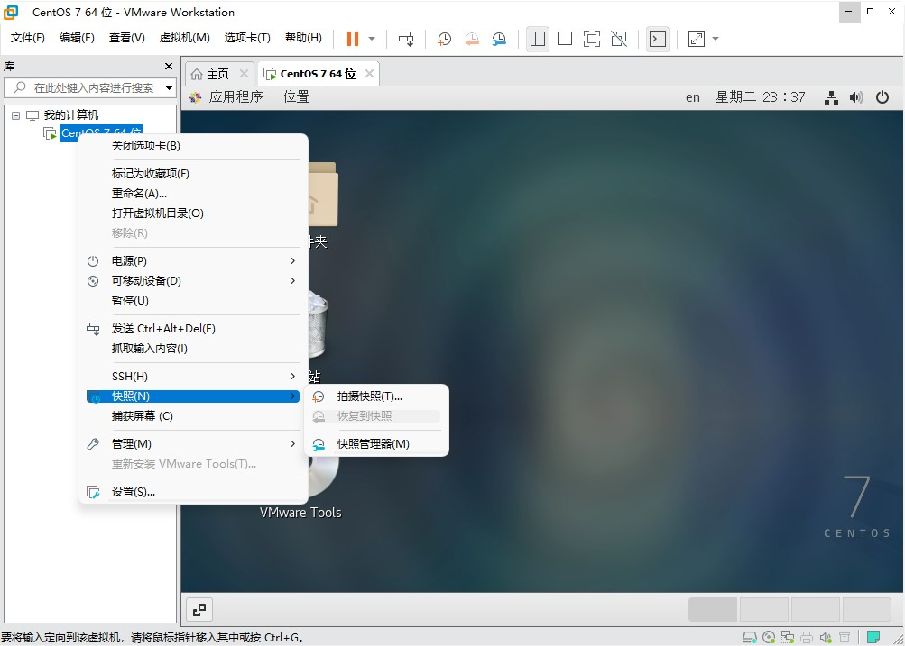
虚拟机的迁移和删除
我们知道虚拟系统在我们主机里面本质上就是一个文件，所以虚拟机的迁移只需要把安装好的虚拟系统这个文件夹整体拷贝或者剪切到目的地即可，删除也很简单只需要在VMware中点击菜单，点击从磁盘中删除即可，或者我们可以直接删除虚拟系统的文件夹，当然如果你选择在VMware中删除虚拟机，要记得先把虚拟机关掉。注意，VMware中的移除，只是将虚拟系统的指向从列表中移除了并不是真正的将虚拟系统从硬盘中删除了。
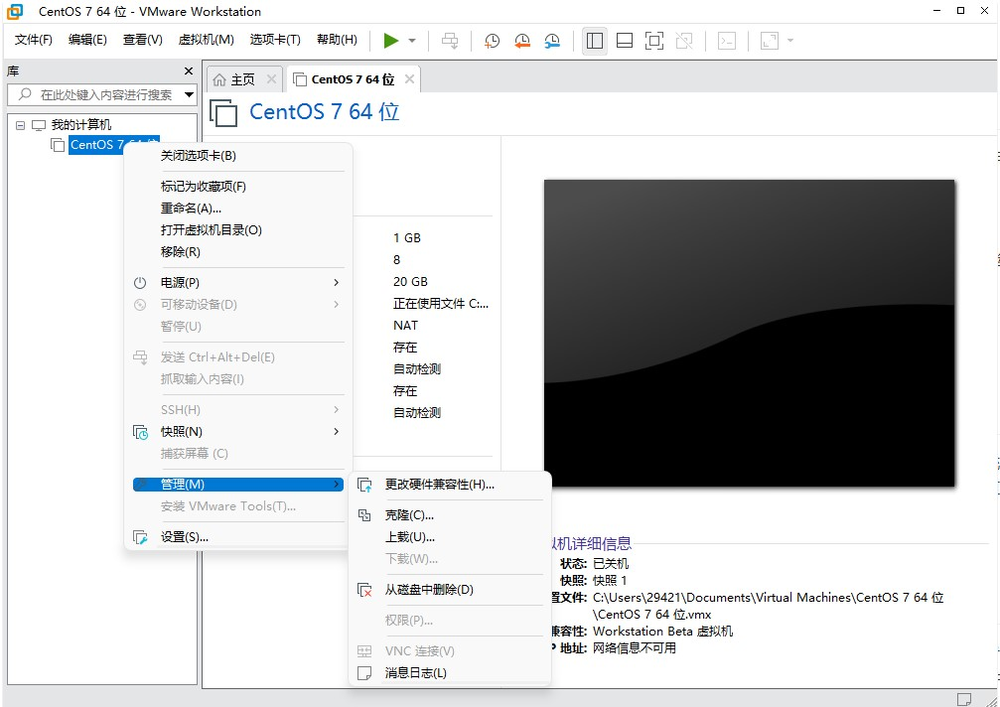
安装VMTools
VMTools的安装可以让我们更好的在主机中管理VM虚拟机，可以设置Windows和CentOS的共享文件夹。安装方法也很简单，如下：
1.首先开启我们的Linux系统，点击上方选项卡中的虚拟机，点击安装VMTools或者再次安装VMTools，当然当你安装完虚拟系统后，在下方黄色提示条中会提示你安装VMTools，点击那个安装也可以。
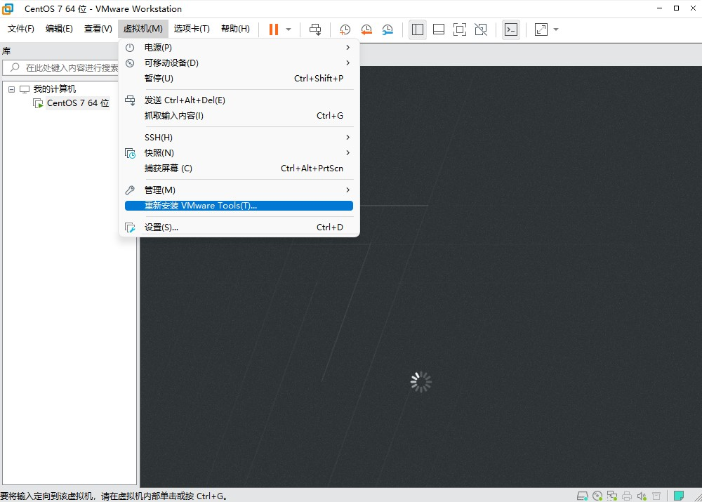
2.之后我们在Linux的桌面上可以看到一个光盘图标，叫做VMware Tools，我们双击打开
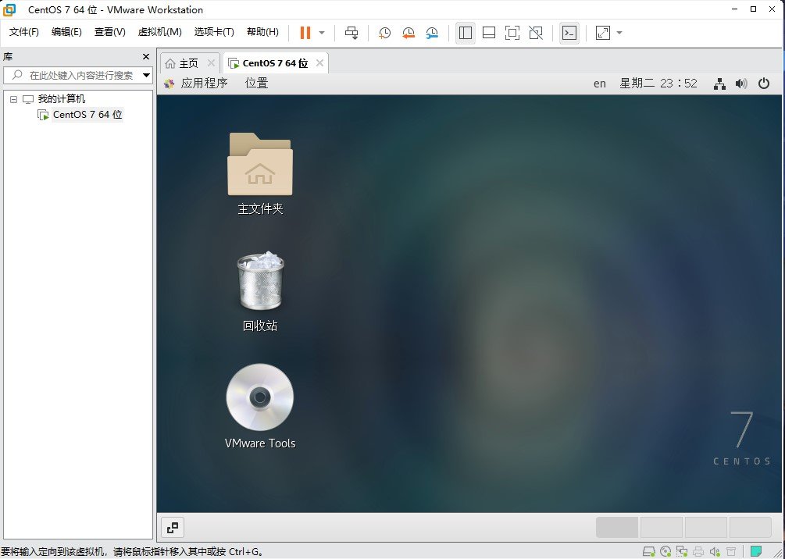
3.打开后我们可以看到一个压缩文件xx.tar.gz，我们将它拷贝到/opt下（点击其他位置，点击计算机就可以找到opt啦，如果你无法粘贴到/opt下可能是因为你的权限不够需要使用root登录，如果还不可以那粘贴到主文件夹也是可以的）
4.接下来我们右键点击Linux桌面，打开终端依次输入如下指令：
1 | cd /opt [cd指令的意义是进入一个文件夹中，这里只需要进入xx.tar.gz所在文件夹即可] |
之后只要一直按回车，全都使用默认设置即可。
安装好VMTools后我们来设置共享文件夹，首先我们在Windows系统下找一个地方建立好我们用来共享的文件夹。之后我们右键我们的虚拟系统点击设置，在上方选择选项，点击共享文件夹，点击总是启用，点击添加，添加完成后点击确定即可。之后我们回到Linux中点击其他位置点击计算机点击mnt文件夹，点击hgfs，就可以看到我们的共享文件夹啦。
 wechat
wechat alipay
alipay